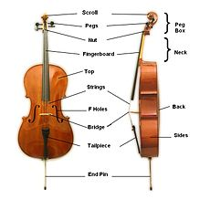

The Cello
Cello The Cello is a member of the string family (the family including violins, violas, and basses). The name "cello" (plural: celli) is an abbreviation of "violoncello," which means "little violone." The "violone" is an obsolete instrument, a large viol, similar to a modern string bass. The cello is made out of wood and has four metal strings (tuned to C2, G2, D3, A3). It is played with a bow similar to that of a violin or viola. Cellists are the only string instrument that always play seated. In the orchestra, celli sit on stage left. Sometimes, the second violins and celli will switch positions and the celli will sit next to next to the first violins.
Jokes
How is lightning like a cellist's fingers?
It never strikes the same place twice.